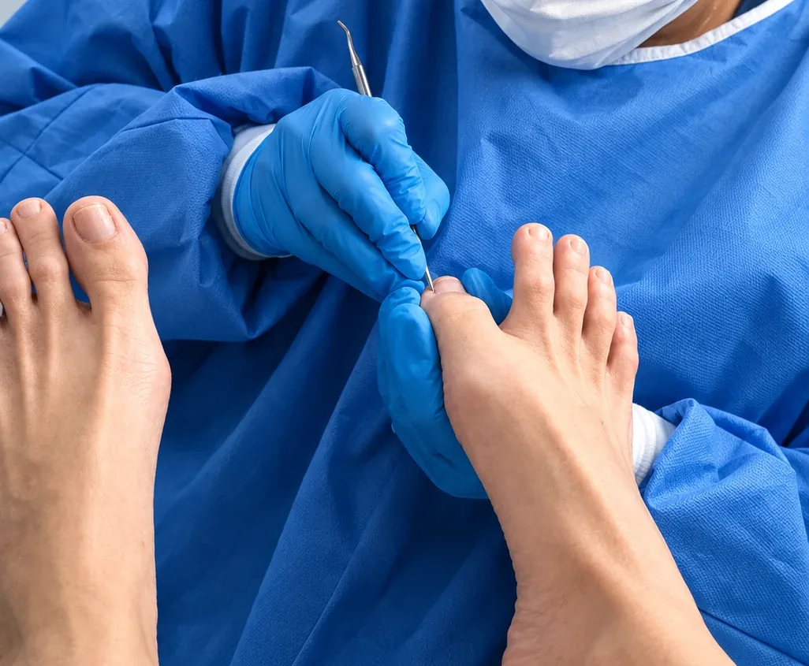
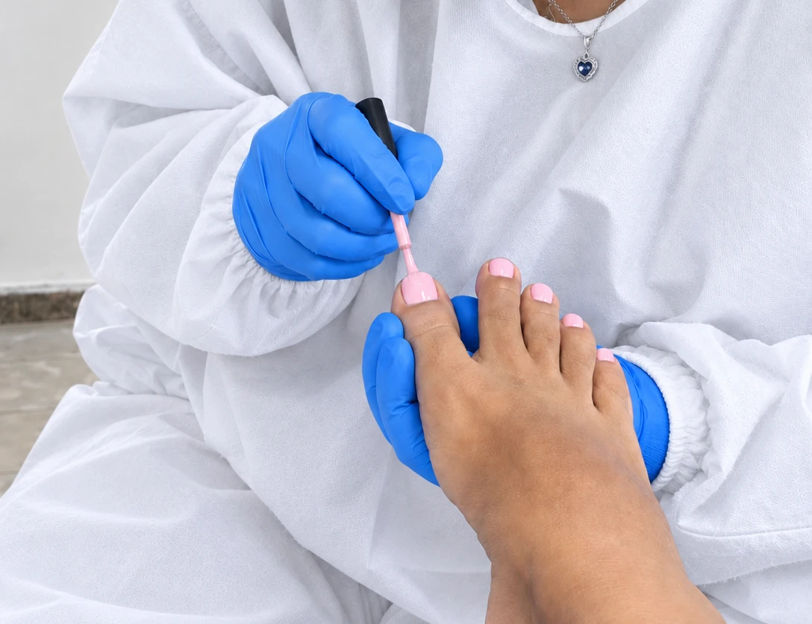
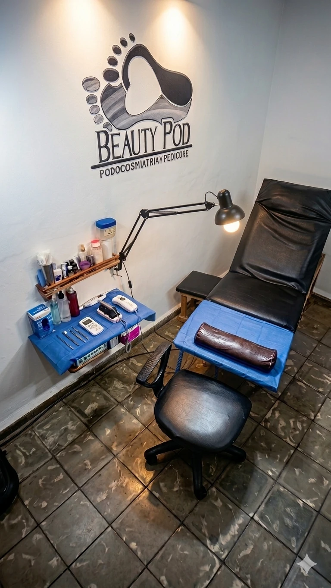

Podología Preventiva
Atención al pie enfocada en prevención y tratamientos básicos. Especialmente útil en adultos mayores, diabéticos, deportistas, bailarines.
Conocer atención de podología★ +500 pies cuidados
Cuidamos la salud y belleza de tus pies. Descubre la atención podológica preventiva y estética profesional que necesitan tus pies.
Encuentra el cuidado que necesitan tus pies.

Atención al pie enfocada en prevención y tratamientos básicos. Especialmente útil en adultos mayores, diabéticos, deportistas, bailarines.
Conocer atención de podología
Perfecto para embellecer unos pies sanos. Tiene como base un servicio preventivo y podrás añadir a tu sesión más tratamientos complementarios.
Conocer servicio estético¿No sabes qué servicio necesitas?
Escríbenos y te orientaremos según lo que tus pies necesiten.
Evaluación detallada y tratamientos adecuados para cada caso.
Protocolos de limpieza y esterilización en cada atención.
Te escuchamos, te orientamos y te acompañamos durante el proceso.
Servicios adaptados a la comodidad y particularidades de cada cliente.
Especialista en Podología Preventiva y Podocosmiatría

Podología y pedicura en Matanzas
Excelente atención y con servicio de consejería incluido.
Cliente de BeautyPod (comentario en Facebook)
Leer más opiniones en Facebook (se abre en una pestaña nueva)
Sí, atendemos uñas encarnadas. Realizamos una evaluación personalizada para valorar cada caso y ofrecer el tratamiento más adecuado, buscando aliviar la molestia de la forma más cómoda y segura posible.
Puedes reservar tu cita aunque no sepas exactamente qué servicio necesitas. Antes de cada atención hacemos una evaluación personalizada para valorar tu caso y determinar el procedimiento más adecuado.
Si has notado algo extraño o alguna molestia, cuéntanoslo al reservar: así tendremos una idea inicial de tu caso y podremos orientarte mejor, aunque la valoración definitiva siempre la realiza la especialista de forma personalizada.
Escríbenos por WhatsApp al +53 5371 9118. Te atiende directamente la asistente de reservas, quien te da una orientación inicial y coordina tu cita según tus necesidades y la disponibilidad de la agenda.
En BeautyPod aceptamos pagos en efectivo en CUP y en otras monedas (USD, EUR, entre otras), y también por transferencia (Transfermóvil).
¿Tus pies necesitan cuidados?
Reserva tu cita ahora.